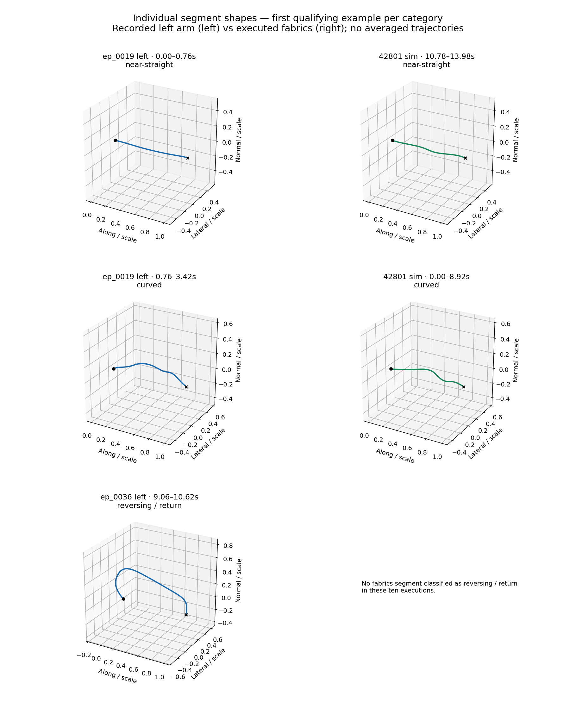
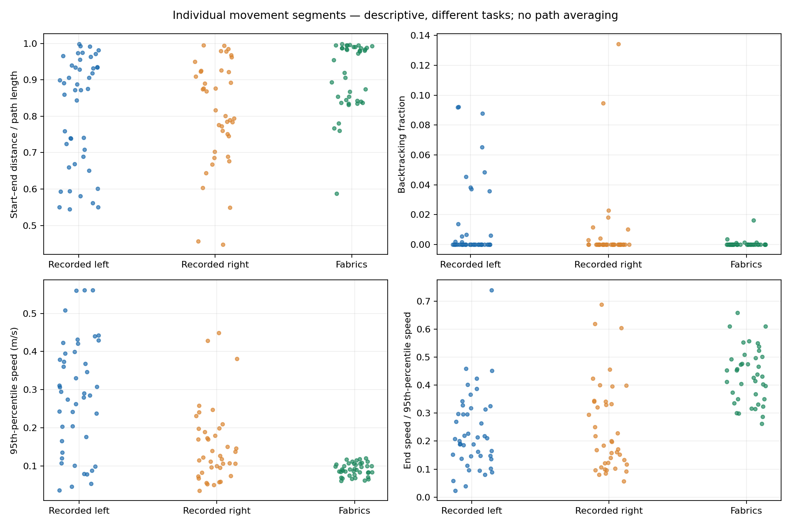

← All motion-comparison galleries
Annotate whole left-arm demonstrations using the five task phases
Ring-to-pole recordings versus executed fabrics. Different resets and tasks: no trajectory averaging. Each segment retains its own geometry, timing and source episode. This is an exploratory segmentation of the same ten recordings (both arms) and ten simulation attempts.
Shape and context are separate. “Approach candidate” is inferred from deceleration and a nearby gripper event; it is not verified ring/pole contact. A straight segment may also be an approach. Sim controller phases are annotations, not segmentation boundaries.
Unchecked: paths in metres, translated to their own start; same axis scale. Checked: normalized geometry only. Gray = raw; blue/green = 5mm spatial smoothing; purple = 15mm broad shape. Endpoints are preserved. Hover for path coordinates.
Left: actual seconds. Right: speed versus fraction of distance traveled—reveals where acceleration and deceleration occur along each path. Lines are individual segments, not population averages. No scaling of speed to force a match.
Full episode speed and selected interval. Dwell periods and sub-2.5cm/short fragments are retained in the downloadable exclusion record; they are not called travel.
Start, midpoint and end frames: side camera (top), overhead (bottom). Source timestamps are aligned to the measured arm signal; maximum nearest-frame gap in this selection is 18ms. These snapshots may still miss a contact event.
After inspecting the source video, save a label here. Corrections stay in this browser and can be exported; they do not silently change the analysis. A path alone cannot establish insertion, contact, or an overshoot.
First qualifying left-arm example in each shape category, alongside the first fabrics example of the same category. These are individual segments; pairings are not matched tasks or lengths.

Every point is one segment. These groups include different behavior mixtures and dependent segments from the same episodes, so do not interpret them as a controlled human-likeness score.

Start with reviewed travel and approach segments separately. Compare per-segment bend size/location, reversals, speed peaks and endpoint slowing. Retain variation across individual examples; do not blend their paths. Use the broad human speed envelope rather than copying short teleoperation spikes. Keep contact/insertion speeds and physical-success checks separate from free-space speed tuning.
The current comparison is an analysis baseline, not a controller update. It does not establish that more curvature or larger speed is always better.
Segment metrics CSV · Full paths, rules and exclusions · Counts and threshold sensitivity · Full episode comparison